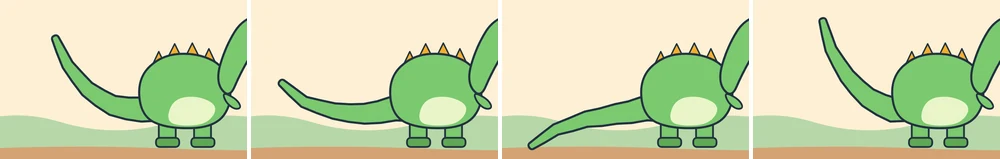
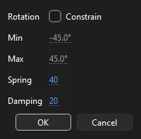
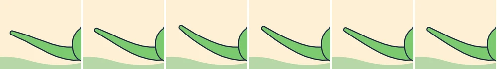

Tutorials
A springy tail
Give the bones of a dinosaur's tail springs, so the tail trails, whips and settles on its own while you pose only its base.
This page is also a lesson inside Phoenix: choose and start A springy tail, and Phoenix points at each control as you go. It takes about 7 minutes.
To follow along here instead, download the starting document, springy-tail.fla, and open it with .

The dinosaur's tail is already boned: four bones inside the tail, on the Armature_1 layer. Its poses on frames 10, 20, 30 and 40 swing the first bone, at the tail's base, up and down. The other bones just follow it, stiff as a stick.
A spring makes a bone lag behind the bones before it, swing past and settle back, as a real tail does.
1. Play it
Press Enter, or click the play button in the timeline header. The tail swings up and down in one piece.
2. Choose the Bone tool
Press Enter again to stop, then click frame 1 of Armature_1, so the tail rests where it was drawn. Press M for the Bone tool.
3. A spring on the second bone

Click the second bone from the dinosaur's body, without dragging. In the Joint Rotation and Spring window, set Spring to 40 and Damping to 20, and click OK.
Spring is how stiffly the bone pulls back to its pose: low swings wide and slow, high quick and small. Damping is how quickly the swinging dies away.
4. The third bone
Click the third bone and give it the same: Spring 40, Damping 20, OK.
5. The tip
And the last bone, at the tip: Spring 40, Damping 20, OK.
6. Play it again
Press Enter. Now the tail trails behind its base and whips at each turn, the tip most of all.
7. After the last pose
Press Enter to stop, then click frame 56 of Armature_1. The last pose is on frame 40, yet the tail is still swinging here: it settles over the frames after it.
Phoenix works the swing out once and keeps it in every frame of the armature, whenever you set a spring or change a pose. So the tail moves the same every time, on the stage, in Test Movie and in exports.

8. Change a pose
Press V for the Selection tool and click frame 20 of Armature_1. Drag the first bone, at the tail's base, by its end a little further down. Phoenix works the springs out again, so the swing after it changes too.
9. Play it
Press Enter and watch the new swing.
What you did
You gave three bones springs and let them do the follow-through, while you posed only the tail's base. Springs work on bones inside shapes and on armatures of symbols alike, for tails, antennae, ears and ponytails.
Try other settings: a Damping of 0 keeps bouncing, 100 settles at once, and a Spring of 0 (None) takes the spring away. FLA files keep the swing in the frames, so it plays as it was saved.
For everything this tutorial touches on, see Springs and Posing.